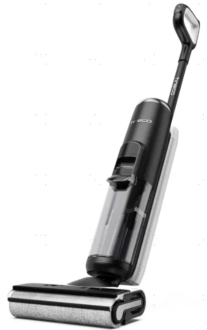
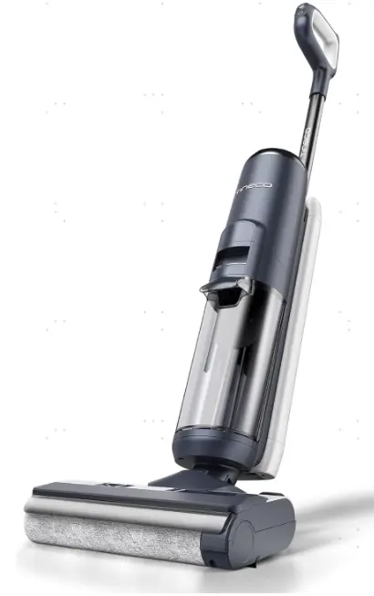
1. Tear down handle& Accessory 8
4. Tear down Battery（CL2019） 9
5. Tear down Battery（CL2371） 11
6. Tear down brush roller motor 11
7. Teard own Micro switch & Water pump 12
8. Tear down Main Body（rotary union） 13
10. Tear down Water level sensor 15
11. Tear down dirty sensor（iloop） 15
12. Tear down body charging wire 15
13. Tear down Repair Charging 16
History
| No | Date | Comments | Version | ISSUE | Approve |
|---|---|---|---|---|---|
| 1 | 24.03.25 | First Draft | 1.0 | Qiu | |
| 2 | 24.04.02 | Review repair guide | 1.1 | Sara | |
| 3 | 24.04.15 | Add New repair guide DWT install flase alarm（78~82） | 1.2 | Qiu | |
| 4 | 24.04.17 | Add Tear down Battery（CL2371） | 1.3 | Qiu | |
| 5 | 24.06.19 | Add repair notice | 1.4 | Qiu |
Tools
Electric screwdriver\Long-nose pliers\Slotted screwdriver\Zip tie\Scissors
Repair notice
Important Safety Instructions:
1. Wear gloves when carrying out any repair work.
2. Ensure that there are no exposed electrical wires in the maintenance environment and strictly prohibit direct testing of the equipment with AC power to prevent electric shock.
3. When repairing electrical components, please disconnect the battery pack first.
Preparation:
Empty the clean water tank and dirty water tank before disassembly.
Replacement requirements:
1. All parts that have passed the cross-check must be removed from the faulty machine, fitted with the user's original adapter and then subjected to the next replacement test.
2. After repair, organise the removed old parts and unused parts.
Range of Product
Note：Floor One S5 Series and Floor One S6 Series structure is similar, and they share the same repair manual.
In case of any issues, please feel free to contact our technical support for assistance.
Floor One S5 Series
Note：CL2371 and CL2019 are both S5 series，but they have different spare part，please check SKU spare part list when in repair process.
| No | Product Name | Factory Serial Model | SKU | Note |
|---|---|---|---|---|
| 1 | Floor One S5 Plus | CL2371I-01 | FW132000AU | CL2371 |
| 2 | Floor One S5 Plus | CL2371G-01 | FW131800JP | |
| 3 | Floor One S5 Plus | CL2371D-01 | FW130500UK | |
| 4 | Floor One S5 Plus | CL2371C-01 | FW131400RU | |
| 5 | Floor One S5 Plus | CL2371B-03 | FW131600MY | |
| 6 | Floor One S5 Plus | CL2371B-01 | FW130700VN | |
| 7 | Floor One S5 Extreme | CL2371A-02 | FW131500DE | |
| 8 | Floor One S5 | CL2371A-01 | FW130300DE | |
| 9 | Floor One S5 | CL2371-01 | FW130200US | |
| 10 | Floor One S5 | CL2019W-01 | FW104300SA | CL2019 |
| 11 | Floor One S5 | CL2019V-01 | FW104000VN | |
| 12 | Floor One S5 Pro 2 | CL2019T-01 | FW103600EU | |
| 13 | Floor One S5 | CL2019S-01 | FW103400EU | |
| 14 | Floor One S5 Pro 2 | CL2019Q-01 | FW103200US | |
| 15 | Floor one S5 Pet | CL2019P-05 | FW104500US | |
| 16 | Floor one S5 Extreme | CL2019P-04 | FW104400US | |
| 17 | Floor One S5 Ultra | CL2019P-03 | FW104100CA | |
| 18 | Floor One S5 | CL2019P-01 | FW103000US | |
| 19 | Floor One S5 Pro | CL2019H-01 | FW101500AU | |
| 20 | Floor One S5 | CL2019F-07 | FW102600IL | |
| 21 | Floor One S5 Extreme | CL2019F-06 | FW102400UK | |
| 22 | Floor One S5 Extreme | CL2019F-05 | FW101600DE | |
| 23 | Floor One S5 | CL2019F-04 | FW101300MY | |
| 24 | Floor One S5 | CL2019F-03 | FW101000RU | |
| 25 | Floor One S5 | CL2019E-05 | FW102200TW | |
| 26 | Floor One S5 Extreme | CL2019E-03 | FW101900US | |
| 27 | Floor One S5 | CL2019E-01 | FW100200US | |
| 28 | Floor One S5 Pro 2 | CL2019B-08 | FW102700TH | |
| 29 | Floor One S5 Pro | CL2019B-07 | FW102500IN | |
| 30 | Floor One S5 Pro 2 | CL2019B-06 | FW102300HK | |
| 31 | Floor One S5 Pro | CL2019B-04 | FW100800ID | |
| 32 | Floor One S5 Pro 2 | CL2019B-02 | FW100600UK |
Floor One S6 Series
Note：CL2331 and CL2223 are both S6 series，but they have different spare part，please check SKU spare part list when in repair process.
| No | Product Name | Factory Serial Model | SKU | Note |
|---|---|---|---|---|
| 1 | Floor One S6 Plus | CL2331S-01 | FW164300UK | CL2331 |
| 2 | Floor One S6 | CL2331I-01 | FW160900DE | |
| 3 | Floor One S6 | CL2331H-01 | FW160800US | |
| 4 | Floor One S6 | CL2223N-01 | FW112700RU | CL2223 |
| 5 | Floor One S6 Pro | CL2223L-02 | FW112800AU | |
| 6 | Floor One S6 Pro Extreme | CL2223L-01 | FW112000AU | |
| 7 | Floor One S6 Extreme | CL2223K-02 | FW111800AU | |
| 8 | Floor One S6 | CL2223K-01 | FW111700AU | |
| 9 | Floor One S6 | CL2223H-03 | FW111300ID | |
| 10 | Floor One S6 | CL2223H-01 | FW111100SG | |
| 11 | Floor One S6 | CL2223E-03 | FW112300TR | |
| 12 | Floor One S6 Pet | CL2223E-02 | FW111500FR | |
| 13 | Floor One S6 | CL2223E-01 | FW110700DE | |
| 14 | Floor One S6 | CL2223D-01 | FW110500US | |
| 15 | Floor One S6 Extreme Pro | CL2223C-02 | FW110300US | |
| 16 | Floor One S6 FlashDry | CL2457B-04 | FW361000AE | CL2457 |
| 17 | iFloor 5 Breeze Complete | CL2453D-01 | FW071000AU | CL2453 |
| iFloor 5 | CL2347O-01 | FW123600RU | ||
| iFloor 5 | CL2347E-04 | FW122600TW | ||
| iFloor 5 | CL2347E-05 | FW123400AE | ||
| GO H20 XL+GO Mini | CL2347-04 | FW123800US | ||
| iFloor 5 | CL2347E-02 | FW122400SG | ||
| GO H2O XL-GH503 Dummy | CL2347-03 | FW123700US | ||
| iFloor 5 | CL2347I-01 | FW123000AU | ||
| iFloor 5 | CL2347C-01 | FW121900DE | ||
| iFloor 5 | CL2347-01 | FW121300US | ||
| GO H2O XL-GH503 | CL2347-02 | FW121600CA | ||
| iFloor 5 | CL2347E-01 | FW122300ID | ||
| iFloor 5 | CL2347C-02 | FW123300DE | ||
| iFloor 5 | CL2347E-03 | FW122500IL | ||
| GO H2O XL Breeze | CL2347A-02 | FW121700US | ||
| iFloor 5 | CL2347G-01 | FW122800UK | ||
| iFloor 5 Breeze Complete | CL2347A-01 | FW121500US | ||
| iFloor 5 Breeze Complete | CL2347B-01 | FW122100DE | ||
| iFloor 5 Breeze | CL2347J-01 | FW123200JP | ||
Range of Spare Part
| No | Spare Part Name | Remark |
|---|---|---|
| 1 | Plastic part | Rotary union 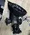 |
| 2 | Plastic part | |
| 3 | Repair Charging | 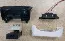 |
| 4 | Wire | Main body chargin wire 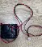 |
| 5 | Wire | DWT signal wire 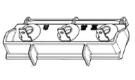 |
| 6 | Sensor | Sewage sensor 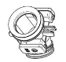 |
| 7 | Sensor | Water level Sensor 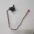 |
| 8 | Motor | Brush roller motor 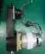 |
| 9 | Motor | Main motor |
| 10 | Clean Water Tank | |
| 11 | Dirt water tank | |
| 12 | Brush Roller | |
| 13 | Charging Base | |
| 14 | PCBA | Main PCBA With Fan |
| 15 | Adapter | |
| 16 | Switch | Micro switch |
| 17 | Display Screen | With decorate |
| 18 | Handle | |
| 19 | Pump | |
| 20 | Scraper | |
| 21 | Battery | |
| 22 | Brush Roller Cover |
Wiring diagram
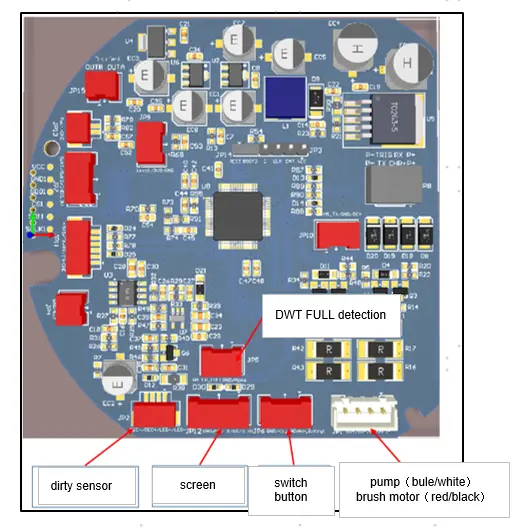
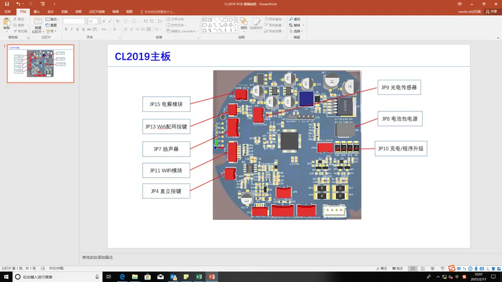
Tear down Guide
Tear down handle& Accessory
Pull the handle up after holding according to photos as below
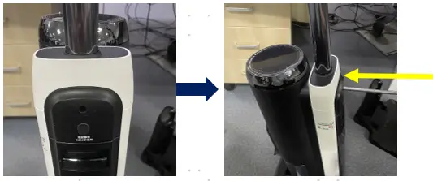
Disassembly all accessories
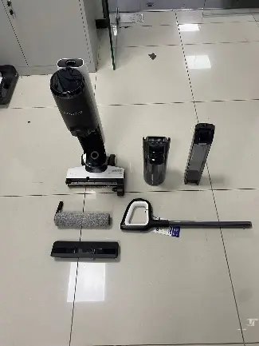
Tear down Display Screen
Clockwise rotation to teardown display screen
Unplug terminal pins of display screen

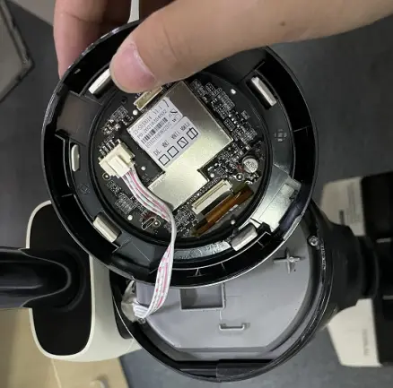
Tear down Main PCBA
Refer to the screen tearing down steps (2.0） to disassembly the screen
Unscrew two screws and remove the plastic cover
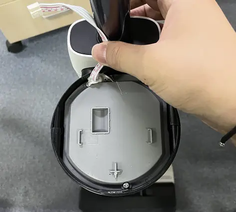
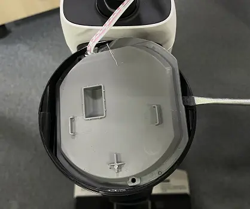
Cut off the wire tie and unplug all the terminals
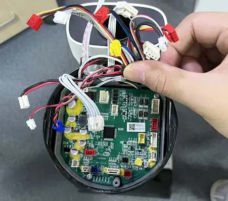
Unscrews two screws on PCBA as marked ,then remove PCBA
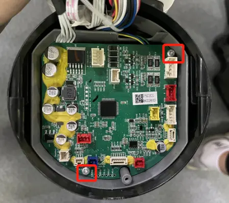
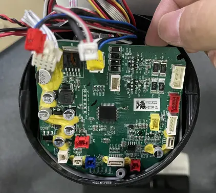
Tear down Battery（CL2019）
Refer to the steps 2.0~3.0 to disassembly the Screen & PCBA
Unplug the terminal pins
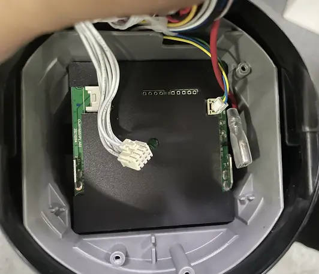
Unscrews 2pcs screws that be fixed the battery
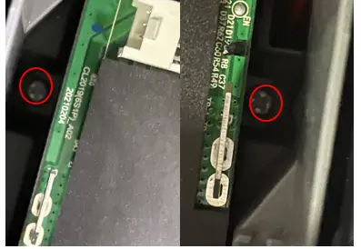
Remove the battery
Tear down Battery（CL2371）Refer to the steps 2.0~3.0to disassembly the Screen & PCBA
Refer to the steps 6.0~8.0to disassembly the appliance housing
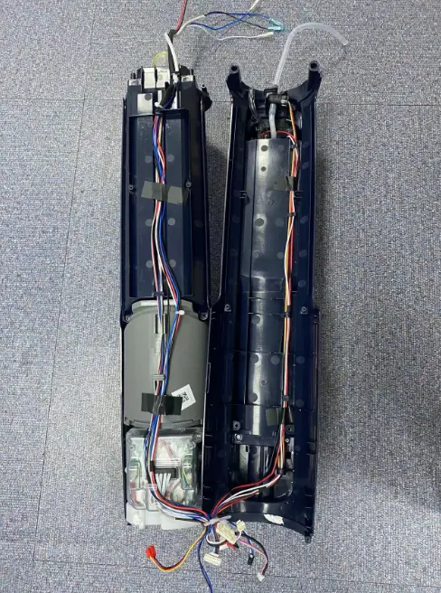
Unscrew screws and disassembly battery cover
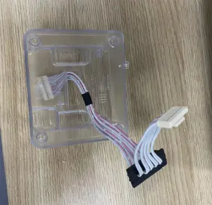
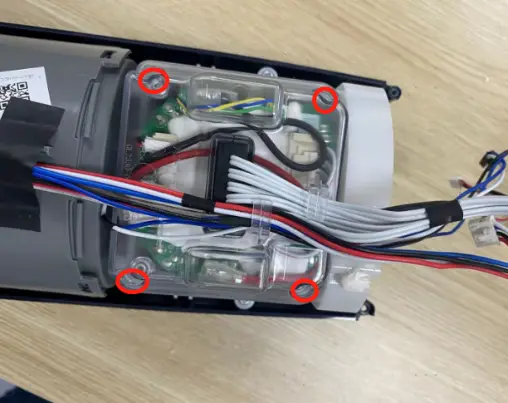
Unscrew screws and unplug terminals to disassembly battery
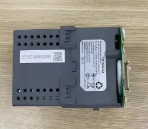
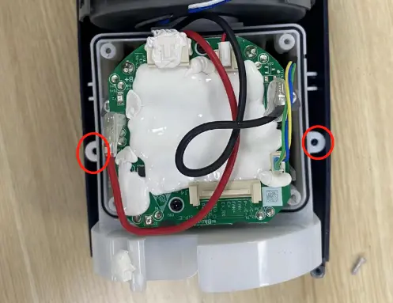
Tear down brush roller motor
Unscrew screws and take out scraper strip
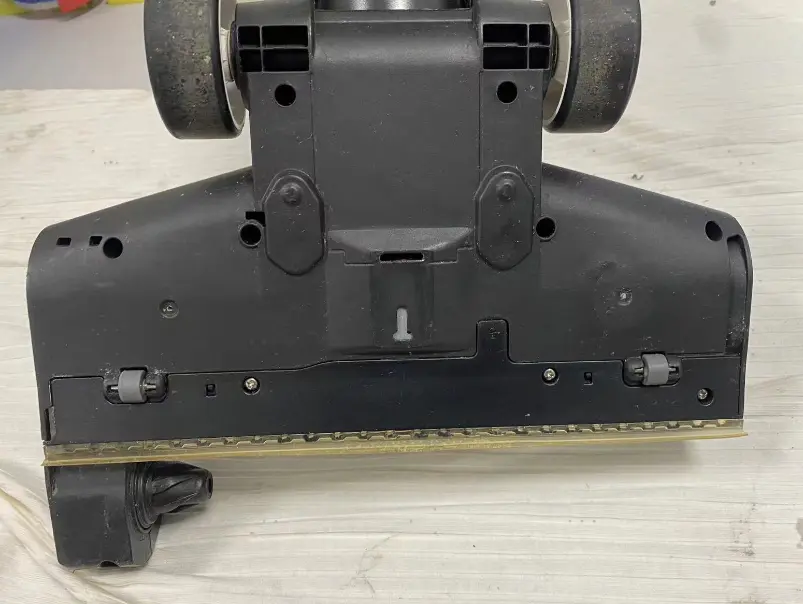
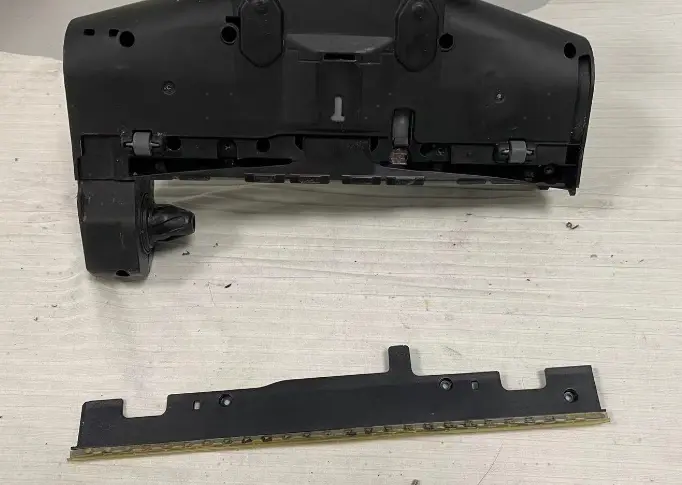
Unscrew bottom screws and disassembly Assy power brush part top cover
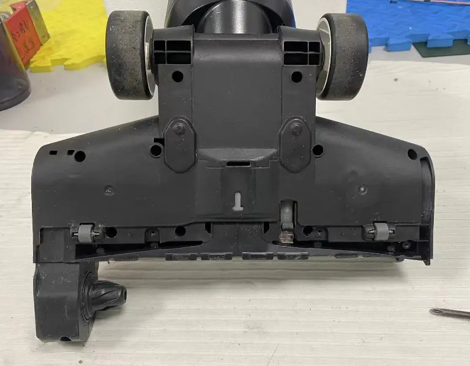
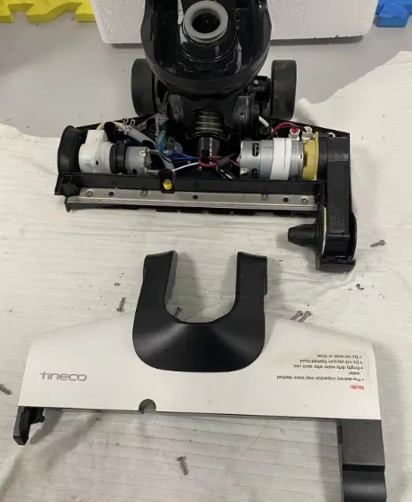
Unscrew screw and unplug connecter to remover brush roller motor
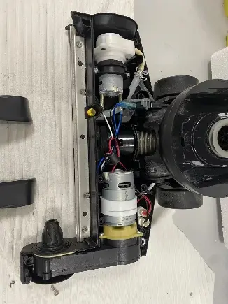
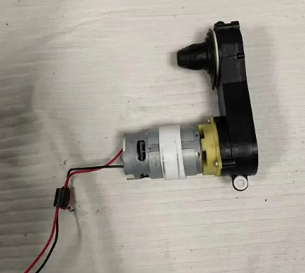
Teard own Micro switch & Water pump
Refer to the steps 10.1~10.2 to disassembly the assy power brush part
Unscrew the screw and unplug switch terminal to replace it
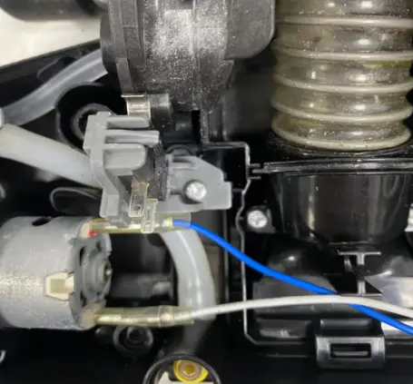
Unscrew the screw,unplug terminal and water pipe to replace pump
Tear down Main Body（rotary union）
Refer to the steps 2.0~4.0 to disassembly the Screen & PCBA&battery
Unscrew screws of the machine as bleow
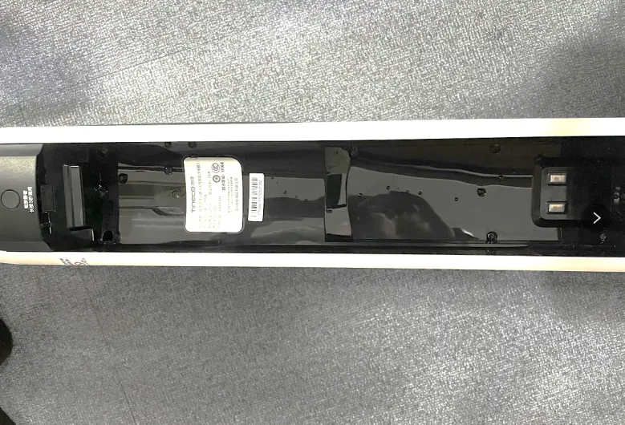
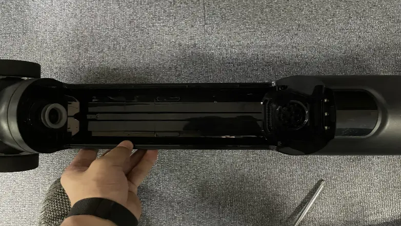
Unscrew 2pcs screws that located on the side of display screen
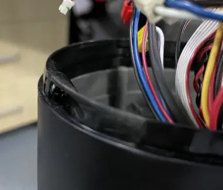
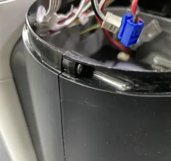
Remove the decoration cover that located on the bottom of the machine, unscrew 1pcs screw
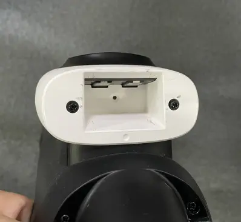
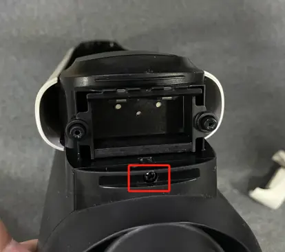
Unscrew 4pcs screws of the bottom of the machine that connected to power brush
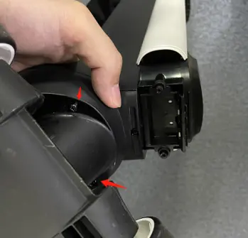
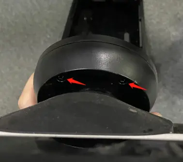
Unscrew 1pcs screws of the machine and Remove rotary union
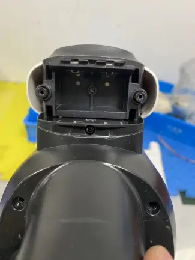
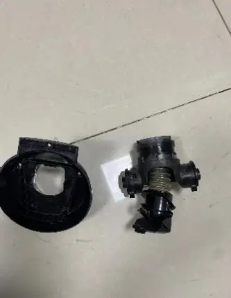
Open the housing of machine
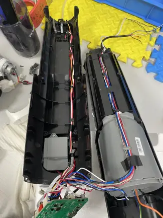
Tear down Main motor
Refer to the steps 2.0~5.0 to disassembly the Screen & PCBA&battery&main body
Take out main motor according to photos as below
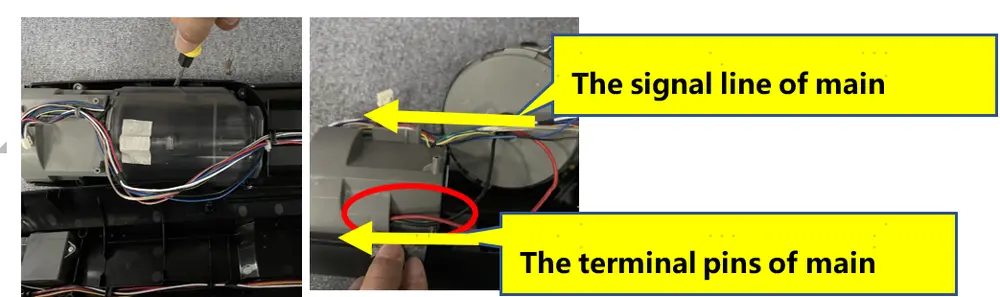
Tear down Water level sensor
Refer to the steps 2.0~5.0 to disassembly the Screen & PCBA&battery&main body
Unplug water level sensor terminal and the water pipe to replace it
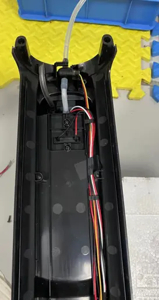
Tear down sewage sensor（iloop）
Refer to the steps 2.0~5.0 to disassembly the Screen & PCBA&Battery&Main body
Unscrew 2pcs screws and unplug the terminal to replace sewage sensor
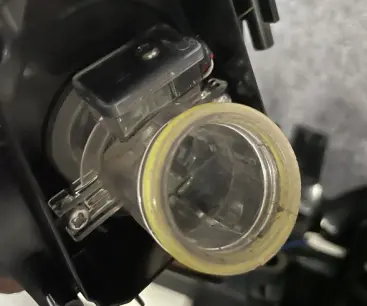
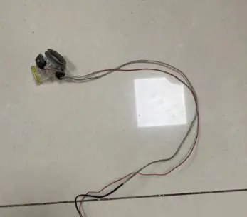
Tear down body charging wire
Refer to the steps 2.0~5.0 to disassembly the Screen & PCBA&Battery&Main body
Pry up charging wire part to remove it
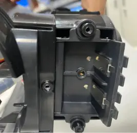
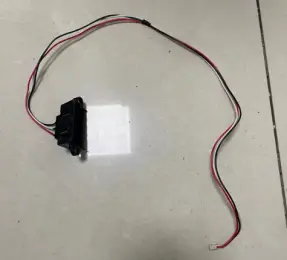
Tear down Repair Charging
Unscrew charging base screws
Disassembly repair charging
Noted: If the machine to be repaired has charging contact issues, please replace both the repair charging and body charging wire( which tear down guide refer to the 9.1~9.2)
Repair Guide
| Failure System | Failure Phenomenon | No | Failure Mode | Repair Solution | Spare Parts |
|---|---|---|---|---|---|
| Water circulation system failure | No/less spray water | 1 | CWT failure | replace CWT | CWT |
| 2 | spray hole blocked | clean spray hole | maintenance | ||
| 3 | CWT seal ring rubber failure | replace CWT seal ring | CWT seal ring | ||
| 4 | pump failure | replace pump | pump | ||
| 5 | main pcba failure | replace main pcba | main pcba | ||
| 6 | pipe blocked | replace water pipe | water pipe | ||
| 7 | pipe bent or broken | fix or replace pipe | water pipe | ||
| 8 | water level sensor blocked | replace water level sensor | water level sensor | ||
| leaking water | 9 | Debris channel /Air duct blocked | 1.Clean the debris channel blockage、debris wrapped around the brush roller 、suction nozzle blockage; 2.Dry and clean HEPA; 3.Empty and clean the DWT | maintenance | |
| 10 | CWT leaking water | replace CWT | CWT | ||
| 11 | pump failure | replace pump | pump | ||
| 12 | water level sensor broken | replace water level sensor | water level sensor | ||
| 13 | water pipe loose | Re-plug water pipe | water pipe | ||
| 14 | Sewage recovery pipe damaged | replace sewage recovery pipe | Rotary union | ||
| 15 | DWT broken | replace DWT | DWT | ||
| 16 | brush cover damaged | replace brush cover | brush roller cover | ||
| 17 | HEPA damaged | replace HEPA | HEPA | ||
| 18 | water pipe damage | replace water pipe | water pipe | ||
| no suck up water | 19 | Debris channel /Air duct blocked | 1.Clean the debris channel blockage、debris wrapped around the brush roller 、suction nozzle blockage; 2.Dry and clean HEPA; 3.Empty and clean the DWT | maintenance | |
| 20 | HEPA not install properly | reinstall HEPA properly | maintenance | ||
| 21 | brush roller damage | replace brush roller | brush roller | ||
| 22 | Sewage recovery pipe damaged | replace sewage recovery pipe | Rotary union | ||
| 23 | motor failure | replace main motor | main motor | ||
| 24 | brush motor failure | replace brush roller motor | brush roller motor | ||
| charging system failure | No response when charging | 25 | adapter failure | replace adapter | adapter |
| 26 | charging base wire failure | replace charging base | charging base | ||
| 27 | charging base poor contact | replace charging base | charging base | ||
| 28 | main body wire damage | replace body wire | wire | ||
| 29 | battery pack failure | replace battery pack | battery pack | ||
| 30 | Main PCBA failure | replace main PCBA | main PCBA | ||
| 31 | display screen failure | replace display screen | display screen | ||
| Battery level indicator flashes several times and then goes off, then the machine stop charging | 32 | battery pack failure | replace battery pack | battery pack | |
| 33 | adapter failure | replace adapter | adapter | ||
| battery level under 100% and the indicator unable To Increase | 34 | battery pack failure | replace battery pack | battery pack | |
| 35 | adapter failure | replace adapter | adapter | ||
| battery level drop when in charging | 36 | battery pack failure | replace battery pack | battery pack | |
| 37 | adapter failure | replace adapter | adapter | ||
| charging system failure | Poor charging contact（shake to charge） | 38 | Charging Pin rusted | Replace the repair charging chip | repair charging chip |
| 39 | Poor contact of the charging contact pin | Replace the repair charging chip | repair charging chip | ||
| 40 | repair charging cosmetic damage | Replace the repair charging chip | repair charging chip | ||
| 41 | charging base cosmetic damage | replace charging base | charging base | ||
| 42 | wire cosmetic damage | replace wire | Wire | ||
| 43 | Rotary union worn or cosmetic damage | replace Rotary union | Rotary union | ||
| abnormal noise when in charging | 44 | adapter failure | replace adapter | adapter | |
| 45 | Main PCBA failure | replace main PCBA | main PCBA | ||
| 46 | battery pack failure | replace battery pack | battery pack | ||
| burn smell in main body when in charging | 47 | Main PCBA failure | replace main PCBA | main PCBA | |
| 48 | battery pack failure | replace battery pack | battery pack | ||
| Burning smell when in charging | 49 | battery pack failure | replace battery pack | battery pack | |
| 50 | adapter failure | replace adapter | adapter | ||
Turn on failure
| turn on but no reaction , screen not light up, also no reaction when charging | 51 | handle failure | replace handle | handle |
| 52 | battery pack failure | replace battery pack | battery pack | ||
| 53 | Main PCBA failure | replace main PCBA | main PCBA | ||
| After pressing the power button, the display lights up, but it doesn't work after releasing the micro switch. | 54 | Micro switch failure | replace Micro switch failure | Micro switch | |
| 55 | Motor failure | replace motor | motor | ||
| 56 | Main PCBA failure | replace main PCBA | main PCBA | ||
| stop running after several times max bar blinking | 57 | motor failure | replace motor | motor | |
| stop running after several times and DWT indicator alarm | 58 | DWT full | Empty/clean the DWT | maintenance | |
| 59 | DWT pin rusted | Rinse and clean the DWT top cover, bottom cover and sensor pin,and dry off | maintenance | ||
| 60 | DWT failure | replace DWT | DWT | ||
| 61 | PCBA failure | Problem solved by replaced PCBA | PCBA | ||
| stop running after several times brush roller indicator alarm | 62 | brush roller is blocked | clean brush roller | maintenance | |
| 63 | brush roller heavy wear | replace brush roller | brush roller | ||
| 64 | brush roller motor failure | replace brush roller motor | brush roller motor | ||
| 65 | Main PCBA failure | replace main PCBA | main PCBA | ||
| stop running after several times screen dies out | 66 | handle failure | replace handle | handle | |
| 67 | Main PCBA failure | replace main PCBA | main PCBA | ||
| 68 | battery pack failure | replace battery pack | battery pack | ||
| mode switch failure | switch mode but no reaction | 69 | handle failure | replace handle | handle |
| 70 | Main PCBA failure | replace main PCBA | main PCBA | ||
| switch mode but auto power-off | 71 | Main PCBA failure | replace main PCBA | main PCBA | |
| 72 | battery pack failure | replace battery pack | battery pack | ||
| 73 | motor failure | replace motor | motor | ||
| False alarm | stop running have nothing alarm | 74 | battery pack failure | replace battery pack | battery pack |
| DWT water is full but no alarm/Water is not full but still alarm | 75 | DWT full | Empty/clean the DWT | maintenance | |
| 76 | DWT pin rusted | Rinse and clean the DWT top cover, bottom cover and sensor pin, and dry off | maintenance | ||
| 77 | DWT failure | replace DWT | DWT | ||
| 78 | DWT signal wire failure | Replace DWT signal wire | DWT signal wire | ||
| 79 | PCBA failure | Problem solved by replaced PCBA | PCBA | ||
| DWT is installed but still alarm need install DWT | 80 | Software problem | Firmware upgrade | ||
| 81 | DWT pin rusted or damage | Clean DWT pin | maintenance | ||
| Replace DWT | DWT | ||||
| 82 | Opposite Body pin rusted or damage | Clean Opposite Body pin | maintenance | ||
| Replace DWT signal wire | DWT signal wire | ||||
| 83 | PCBA failure | Problem solved by replaced PCBA | PCBA | ||
| CWT have enough water but still alarm, and no water spray out from outlet. | 84 | CWT failure | replace CWT | CWT | |
| 85 | spray hole blocked | clean spray hole | maintenance | ||
| 86 | Impurities are blocking the water outlet valve under the CWT | Clean the impurities on the valve | Maintenance | ||
| 87 | CWT seal ring rubber failure | replace CWT seal ring | CWT seal ring | ||
| 88 | pump failure | replace pump | pump | ||
| 89 | main PCBA failure | replace main pcba | main pcba | ||
| False alarm | 90 | pipe blocked | replace water pipe | water pipe | |
| 91 | pipe bent or broken | fix or replace pipe | water pipe | ||
| 92 | water level sensor blocked | replace water level sensor | water level sensor | ||
| CWT have enough water but still alarm, and the machine spraying water normally | 93 | The Water level sensor has air bubbles inside | It tested okay after being turned up to the maximum setting for 30s | NFF | |
| 94 | Impurities are blocking the water outlet valve under the CWT | Clean the impurities on the valve | Maintenance | ||
| 95 | water level sensor failure | replace water level sensor | water level sensor | ||
| 96 | main PCBA failure | replace main PCBA | main PCBA | ||
| CWT have no water but not alarm | 97 | The Water level sensor has water remind inside | It tested okay after being turned up to the maximum setting for 30s | NFF | |
| 98 | Impurities are blocking the water outlet valve under the CWT | Clean the impurities on the valve | Maintenance | ||
| 99 | water level sensor failure | replace water level sensor | water level sensor | ||
| 100 | Water pipe in front of the water level sensor blocked | replace water pipe | water pipe | ||
| 101 | main PCBA failure | replace main PCBA | main PCBA | ||
| Brush roller indicator blinking but the roller spinning normally | 102 | brush roller heavy wear | replace brush roller | brush roller | |
| 103 | brush roller motor failure | replace brush roller motor | brush roller motor | ||
| 104 | Main PCBA failure | replace main PCBA | main PCBA | ||
| iloop ring always red when suck nothing dirty | 105 | Debris channel /Air duct blocked | 1.Clean the debris channel blockage、debris wrapped around the brush roller 、suction nozzle blockage; 2.Dry and clean HEPA; 3.Empty and clean the DWT | maintenance | |
| 106 | dirty sensor failure | replace dirty sensor | dirty sensor | ||
| 107 | Main PCBA failure | replace main PCBA | main PCBA | ||
| 108 | display screen failure | replace display screen | display screen | ||
| iloop ring always blue even suck dirty water (or other color liquid) | 109 | dirty sensor failure | replace dirty sensor | dirty sensor | |
| 110 | Main PCBA failure | replace main PCBA | main PCBA | ||
| 111 | display screen failure | replace display screen | display screen | ||
| screen display malfunction | screen not reaction/display incomplete/display blinking | 112 | display screen failure | replace display screen | display screen |
| 113 | Main PCBA failure | replace main PCBA | main PCBA | ||
| iloop ring not change | 114 | Main PCBA failure | replace main PCBA | main PCBA | |
| 115 | display screen failure | replace display screen | display screen | ||
| 116 | dirty sensor failure | replace dirty sensor | dirty sensor | ||
| connect to network failure | appliance cannot connect to network | 117 | display screen failure | replace display screen | display screen |
| 118 | Main PCBA failure | replace main PCBA | main PCBA | ||
| WiFi/Mute/Language Switch Button no reaction | 119 | handle failure | replace handle | handle | |
| 120 | Main PCBA failure | replace main PCBA | main PCBA | ||
| abnormal noise | motor noise | 121 | motor failure | replace main motor | main motor |
| Noise comes from main body, but not from the motor | 122 | HEPA failure | Replace HEPA | HEPA | |
| brush noise | 123 | Brush roller blocked by debris | Clean the debris channel blockage、debris wrapped around the brush roller 、suction nozzle blockage; | maintenance | |
| 124 | scraper has dirt buildup | clean the scraper | maintenance | ||
| 125 | brush roller heavy wear | replace brush roller | brush roller | ||
| 126 | The small wheel noisy | replace the repair wheel | repair wheel | ||
| 127 | Scraper broken | replace scraper | scraper | ||
| pump noise | 128 | pump noise | replace pump | pump | |
| Rotary union noise | 129 | Rotary union failure | replace Rotary union | Rotary union | |
| Self-cleaning malfunction | press the self-cleaning button,Voice Prompt“Please place appliance on charging dock,and the self-cleaning function not start | 130 | adapter failure | replace adapter | adapter |
| 131 | Poor charging contact | replace repair charging chip | repair charging chip | ||
| 132 | charging base wire failure | replace charging base | charging base | ||
| 133 | Main body charging wire failure | replace wire | wire | ||
| 134 | battery pack failure | replace battery pack | battery pack | ||
| 135 | Main PCBA failure | replace main PCBA | main PCBA | ||
| 136 | Rotary union cosmetic damage | replace Rotary union | Rotary union | ||
| stop running in self-cleaning process, and the screen turned off | 137 | adapter failure | replace adapter | adapter | |
| 138 | charging base failure | replace charging base | charging base | ||
| 139 | charging base poor contact | replace charging base | charging base | ||
| stop running in self-cleaning process, and the DWT false alarm | 140 | DWT full | Empty/clean the DWT | maintenance | |
| 141 | DWT pin rusted | Rinse and clean the DWT top cover, bottom cover and sensor pin,and dry off | maintenance | ||
| 142 | DWT failure | replace DWT | DWT | ||
| 143 | PCBA failure | Problem solved by replaced PCBA | PCBA | ||
| stop running in self-cleaning process, and the CWT false alarm | 144 | CWT empty | Filled the CWT | NFF | |
| 145 | The Water level sensor has air bubbles inside | It tested okay after being turned up to the maximum setting for 30s | NFF | ||
| 146 | Impurities are blocking the water outlet valve under the CWT | Clean the impurities on the valve | Maintenance | ||
| 147 | water level sensor failure | replace water level sensor | water level sensor | ||
| 148 | main PCBA failure | replace main PCBA | main PCBA | ||
| press the self-cleaning button but no reaction | 149 | handle failure | replace handle | handle | |
| 150 | Battery failure | replace battery | battery | ||
| 151 | Main PCBA failure | replace main PCBA | main PCBA | ||
| self-cleaning cannot stop | 152 | Main PCBA failure | replace main PCBA | main PCBA | |
| Reminds water on charging base after self cleaning function | 153 | Debris channel /Air duct blocked | 1.Clean the debris channel blockage、debris wrapped around the brush roller 、suction nozzle blockage; 2.Dry and clean HEPA; 3.Empty and clean the DWT | maintenance | |
| 154 | HEPA not install properly | reinstall HEPA properly | maintenance | ||
| 155 | Debris pipe damage | Replace Rotary union | Rotary union | ||
| 156 | brush roller heavy wear | replace brush roller | brush roller | ||
| 157 | water pipe damage | replace water pipe | water pipe | ||
| 158 | motor failure | replace main motor | main motor | ||
| 159 | Main PCBA failure | replace main PCBA | main PCBA | ||
| after finish self-cleaning program still remind “Please begin self-cleaning cycle” | 160 | Main PCBA failure | replace main PCBA | main PCBA | |
| Brush roller not spinning | Brush roller stop spinning, and the machine alarm brush abnormal | 161 | brush roller is blocked | clean brush roller | maintenance |
| 162 | brush roller heavy wear | replace brush roller | brush roller | ||
| 163 | brush roller motor failure | replace brush roller motor | brush roller motor | ||
| 164 | Main PCBA failure | replace main PCBA | main PCBA | ||
| Brush roller not spinning with no alarm | 165 | brush roller motor failure | replace brush roller motor | brush roller motor | |
| 166 | Main PCBA failure | replace main PCBA | main PCBA |